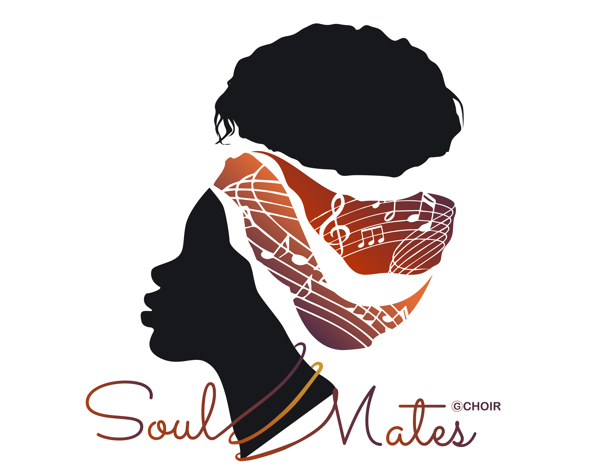
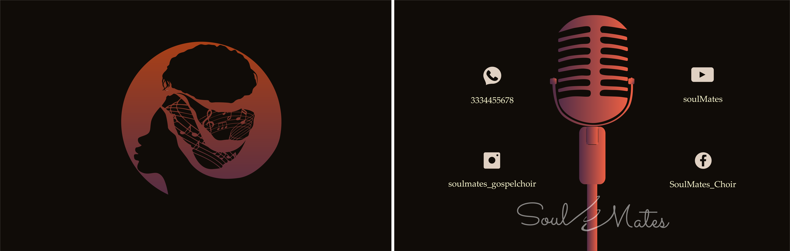
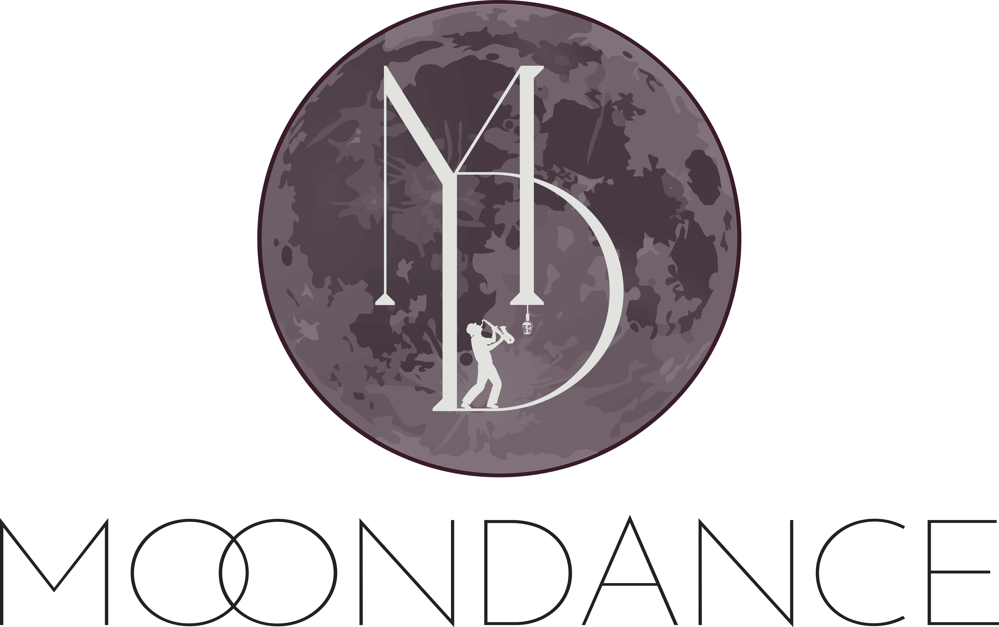
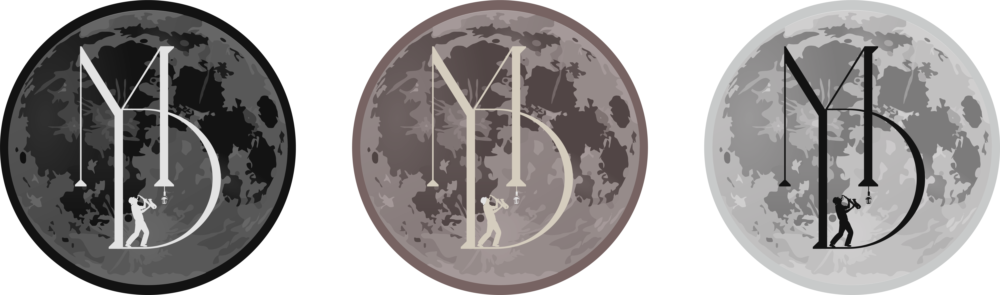
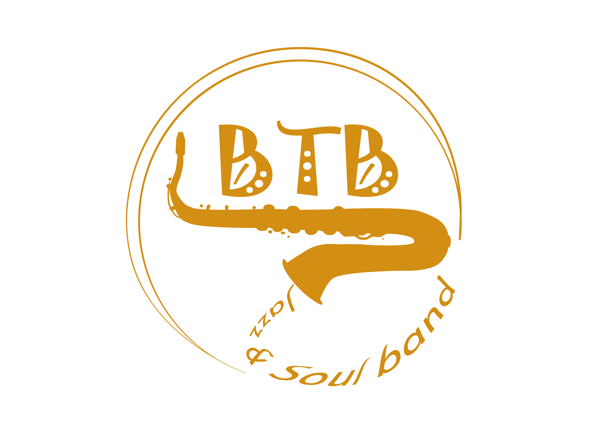
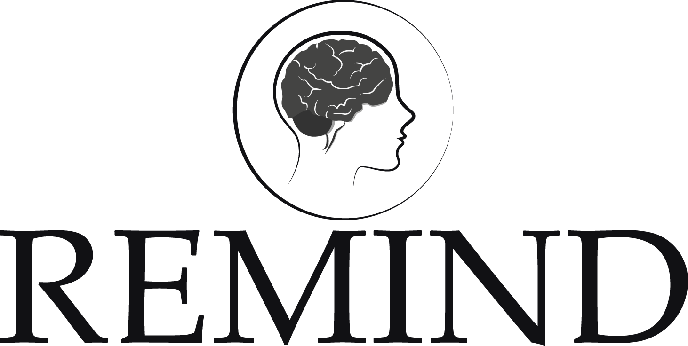
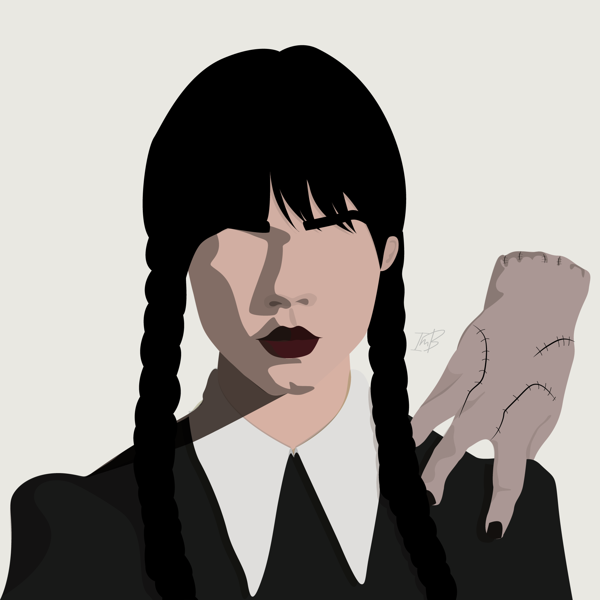
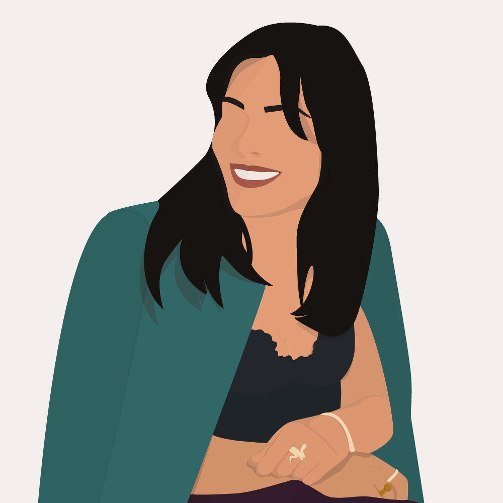
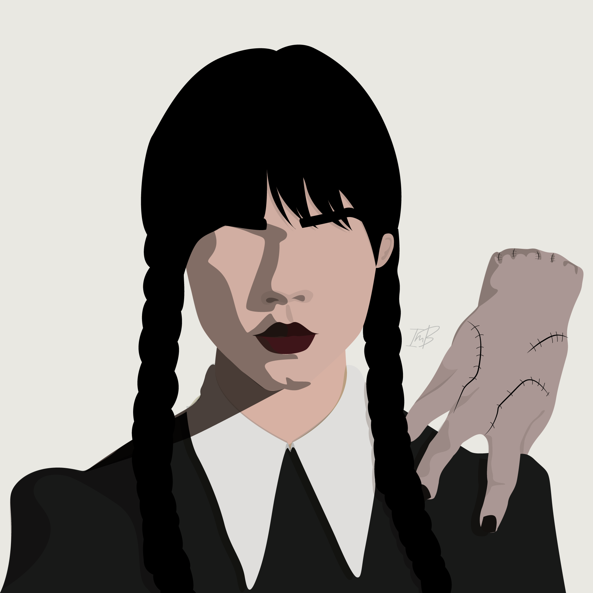
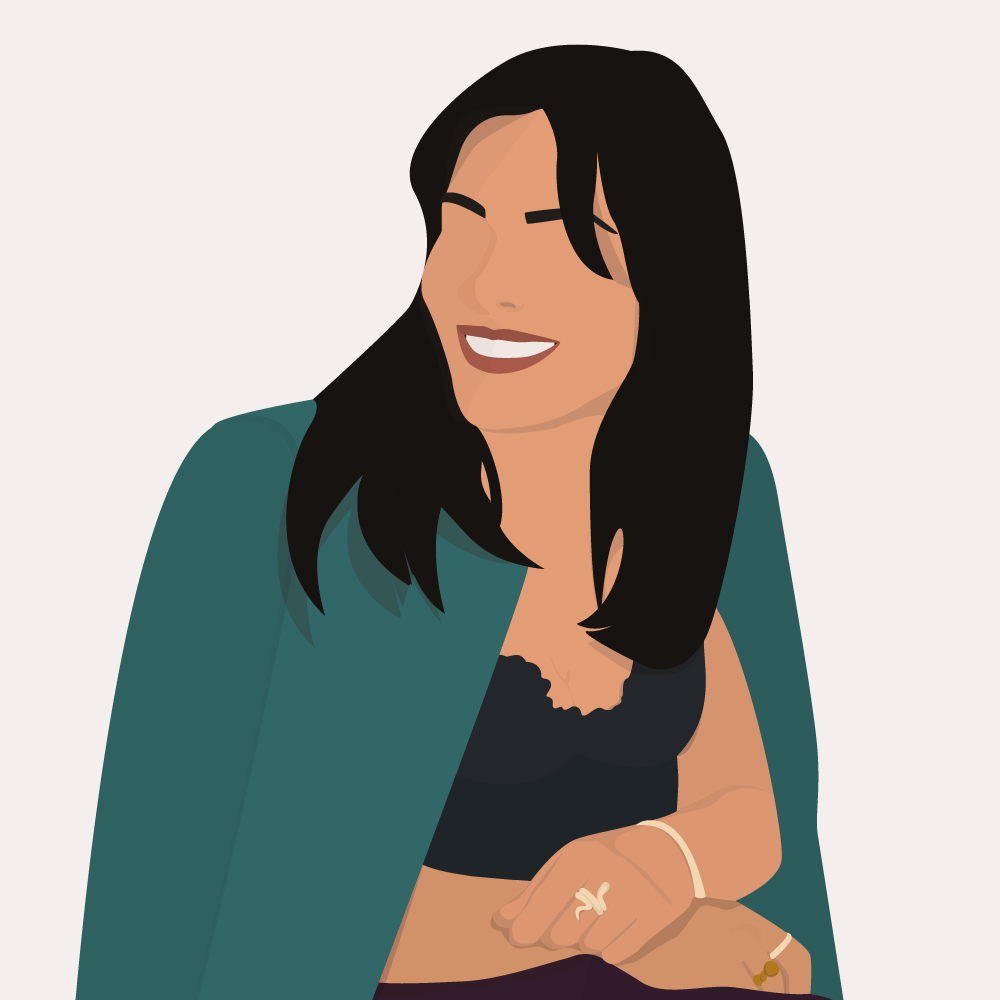

Portfolio
GOSPEL CHOIR
Progetto per SoulMates, coro di musica gospel e spiritual
 
WEDDING BAND
Progetto per MoonDance, band per tutti i matrimoni


MUSIC BAND
Progetto per BTB, band di musica soul and jazz.

One-page web site
WEB APP - REMIND
Web App per un target di utenti over 65, sviluppata
in collaborazione con il progetto Sereni del laboratorio di
Human Interfaces in Information Systems (HIIS) del CNR di Pisa


Illustrazioni freelance


 


